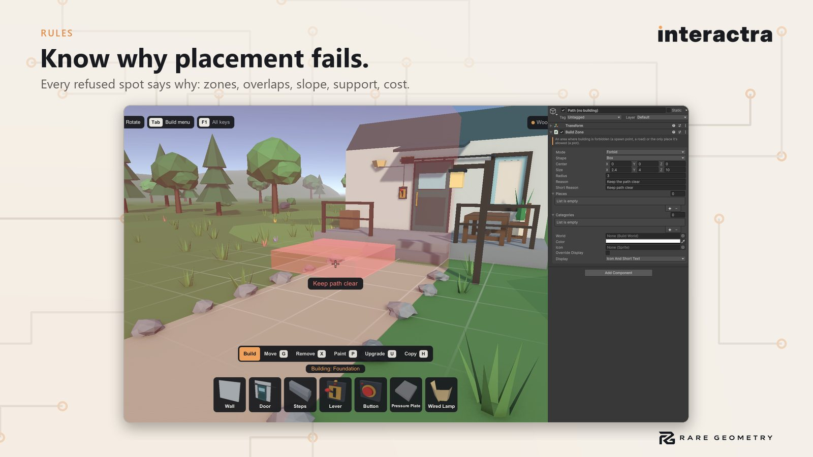

Troubleshooting


Nothing happens when I press the interact key #
Add an Interaction Debug Overlay to the scene and press Play (F3 toggles it). It shows, for each Interactor, what it is looking at and the first rule that blocks it:
- Ray hit nothing / blocked by a collider: the object needs a collider, and nothing solid may sit in front of it.
- Too far away: raise Max Distance on the Interactable.
- Locked: the Interactor needs a Key Ring with the lock's key id.
- Nothing to do: add a behaviour (for example Hinge) next to the Interactable.
- Input: … (DISABLED): the Interactor's input action is not enabled.
The door spins around its middle #
Its pivot is in the centre of the mesh. Run Tools > Interactra > Setup Wizard on the prefab: it builds a copy with the hinge on the edge and leaves your original untouched.
A physics door stops part-way, or drifts open #
A Physics Hinge Drive door finishes every real push (to fully open or fully closed, in the direction it was pushed), settles back from small bumps, latches when it swings shut, and is held where it rests. If yours still stops part-way, check Finish Pushes and Free Swing When Idle are on, and that nothing solid is in the way of the full swing (a door waits while a player stands in its way, and finishes once they move). With Ignore Frame Collisions on, it ignores its own frame and the wall the frame is set into, but not other walls or furniture nearby. To make it open one way only, set Swing on the Hinge to Outward Only or Inward Only.
A door opens towards the player #
Set Swing on its Hinge to Away From Player: it then opens away from whoever opens or walks into it. Furniture doors made by the wizard use Outward Only on purpose (they can't open into the cabinet).
The wizard didn't find my drawers (or found the wrong parts) #
Parts are found by name (door, drawer, lid...) or, when nothing is named like that, guessed by shape. In the wizard, change a part's Type, remove it (x), or click the right child in the Scene view preview and press Add part.
3D text shows through walls #
Unity's legacy 3D Text uses a shader that draws on top of everything. The demo signs use a depth-tested copy
(Samples/Art/Sample World Text.mat with the SampleWorldText component). In your game, TextMesh Pro text is
depth-tested already.
"Missing script" on prefabs made by the wizard #
Unity's script database can go out of date after moving or renaming a project. Right-click the Interactra folder,
choose Reimport, then run the wizard again. The wizard refuses to save a broken prefab and tells you this.
Multiplayer: a client presses the key but the door doesn't move #
The host decides every interaction. Check the client's player object has an Interactor and the door has a Network Object and Network Interactable. If the host refuses (for example Locked), the client gets the reason through the Interactable's Denied event.
Still stuck? #
See Support: Discord https://discord.gg/AmpBDxRAKu (ask in #help). Please paste the support info from Tools > Interactra > Help and Support (Interactra version, Unity version, render pipeline). Bugs: https://github.com/raregeometry/Support/issues. Email: raregeometrysupport@gmail.com. Website: https://raregeometry.github.io/interactra/